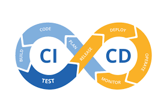

Certifications 📃
AWS Certified Solutions Architect
Certified by AWS, demonstrating proficiency in designing and deploying scalable and cost-efficient systems on the AWS platform.
Skillsüí™
HTML
CSS
Java Script
Node.js
Python
Docker
AWS
SQL
My Road to Achievement🎓
From being a combat soldier to becoming an AWS Certified Solutions Architect, this is my journey into the high-tech world. With the help of the "Atidim" organization and my studies at Kernelios, I was able to transform my career path and skills. Here's a glimpse into the milestones of my journey.
Projects📖

Contact 📞
Let's connect! Feel free to reach out to me via any of the platforms below: